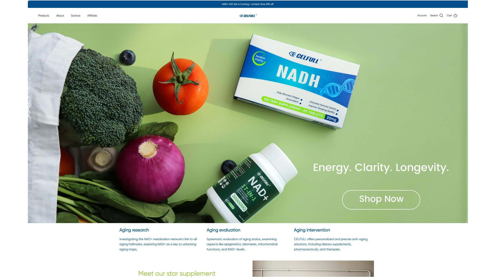
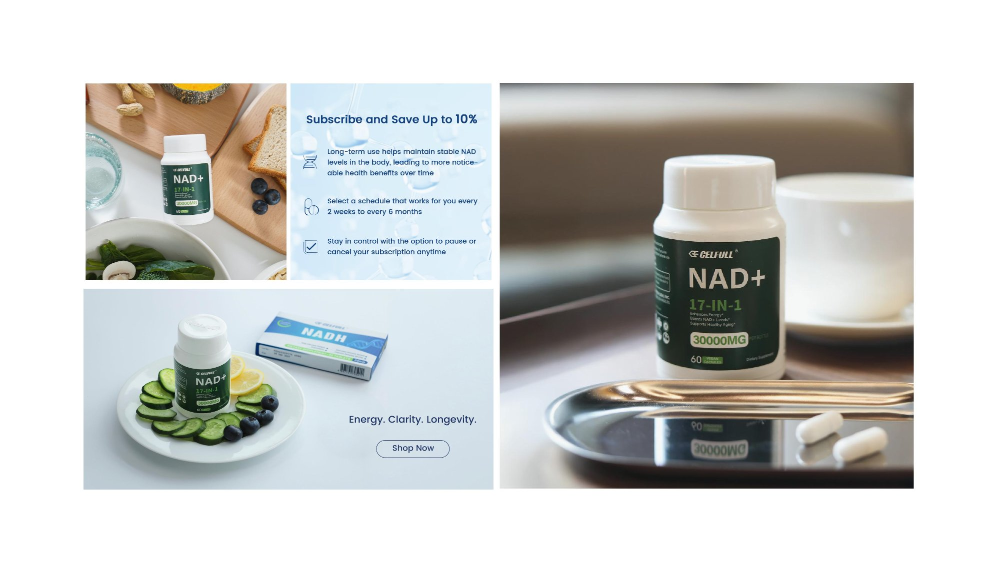
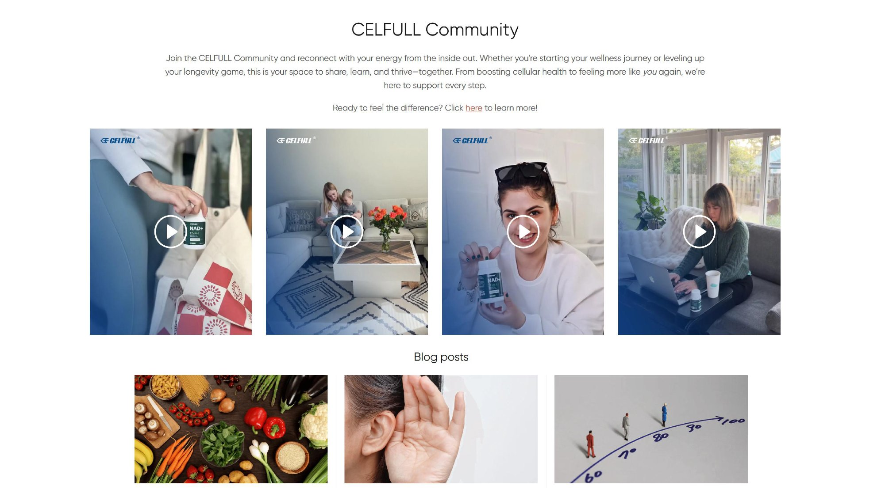
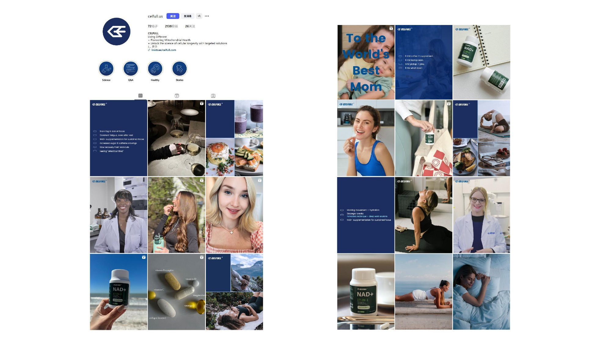

Building Trust for a Clinical Anti-aging Brand — Exponential subscriber growth through authority and authenticity 临床级抗衰品牌的信任力建设 — 以权威与真实驱动订阅用户指数级增长
Celfull is a biotechnology company specializing in clinical-driven anti-aging solutions, providing personalized solutions for aging and degenerative diseases. Our work focused on building brand trust through authoritative voices and precision marketing to drive exponential subscriber growth. CELFULL 是一家生物技术公司，专注于提供以临床为导向的领先抗衰品牌，为衰老及退行性疾病提供个性化解决方案。我们的工作聚焦于通过权威声音和精准营销建立品牌信任，实现订阅用户的指数级增长。



By combining professional medical authority (PhD doctor endorsements) with authentic user stories, the brand achieved exponential growth in subscribed users. The dual-credibility approach proved highly effective in building trust for a clinical health brand. 通过将专业医学权威（博士背书）与真实用户故事相结合，品牌成功实现订阅用户数量的指数级增长。双维度可信度策略在临床健康品牌的信任构建中被证明极为有效。